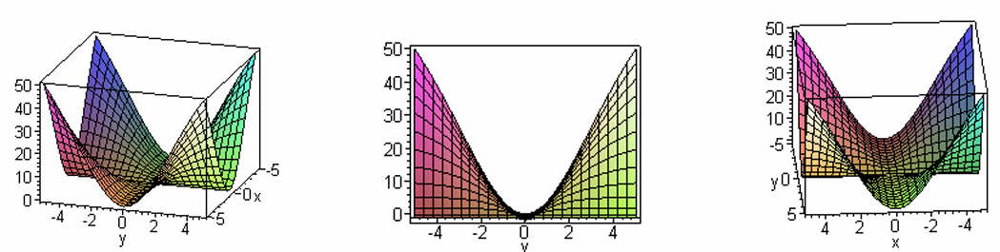

Homework Section 14.2
-
Question 1
Given `lim_((x,y)->(2,3)) f(x,y) = 8`, under what condition does `f(2,3)=8`?
-
Question 2
Find the limit if it exists. If the limit does not exist, then find two paths in the xy-plane that produce different limits in order to verify that it doesn't exist.
- `lim_((x,y)->(-2,4)) 2x^2y - 5x^3y^2 + 7`
- `lim_((x,y)->(0,0)) (3+2y)/(cos(3x-2y))`
- `lim_((x,y)->(0,0)) (3x^2)/(2x^2+y^2)`
- `lim_((x,y)->(0,0)) (x^4-y^4)/(x^2+y^2)`
- `lim_((x,y)->(0,0)) (3x^2y)/(x^4+y^2)`
- `lim_((x,y,z)->(-2,4,2)) 2x^2y - 5x^3y^2z - 7z`
-
Question 3
Let `g(t)=t^2+sqrt(t)` and `f(x,y)=2x+3y-6`. Find `h=g(f(x,y))` and the set on which `h` is continuous.
-
Question 4
For which sets of points are the following functions continuous?
- `f(x,y) = x/sqrt(x+y-2)`
- `f(x,y) = sin^(-1)(x^2+y^2)`
- `g(x,y) = ln(x^2+y^2-4)`
-
`f(x,y) = { ( (xy)/(x^2+xy+y^2) , "if " (x,y)!=(0,0) ) , ( 0 , "if " (x,y)=(0,0) ) :}`
-
Question 5
Consider the function `f(x,y) = (xy)/sqrt(x^2+y^2)`. Fill in the table below with function values accurate to the nearest thousandth and then make a conjecture about the value of `lim_((x,y)->(0,0)) f(x,y)`.
Table 2: Function values for f(x,y) near the origin x \ y -0.2 -0.1 -0.05 0 0.05 0.1 0.2 -0.2 -0.1 -0.05 0 0.05 0.1 0.2 -
Question 6
Below are three different views of the graph of `f(x,y) = (4x^2y^2)/(x^2+y^2)`. Use these graphs to make a conjecture about the value of `lim_((x,y)->(0,0)) (4x^2y^2)/(x^2+y^2)`. Then explain how you got your answer.

-
Question 7
Use the Epsilon-Delta definition of limit to prove that `lim_((x,y)->(a,b)) x = a`.